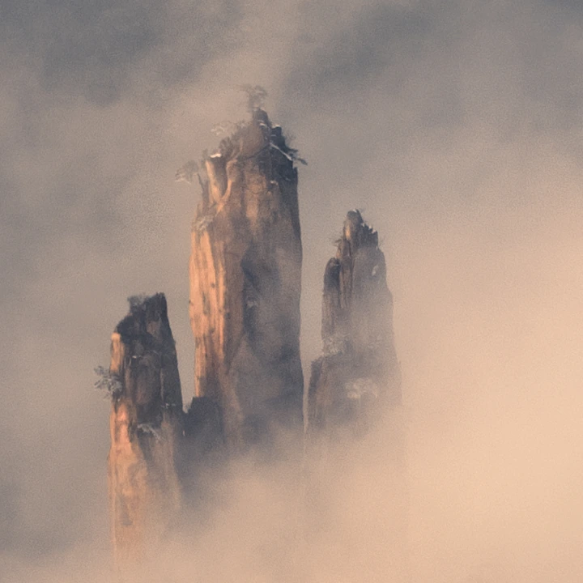
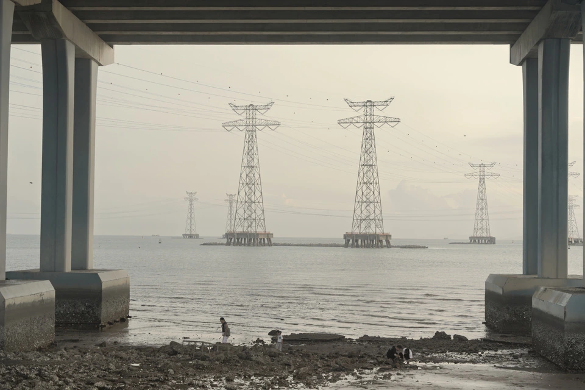
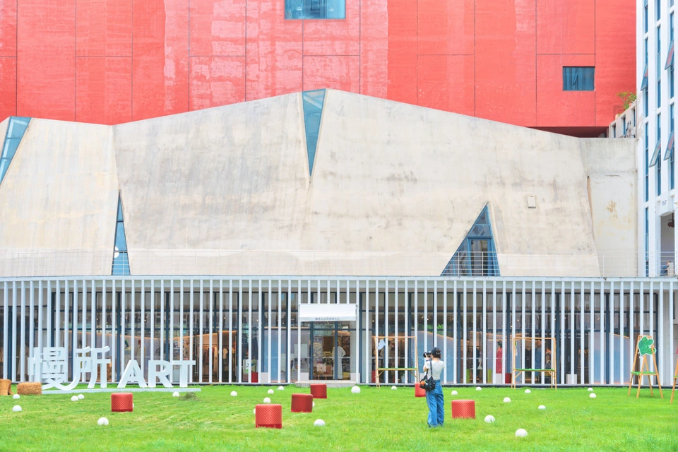
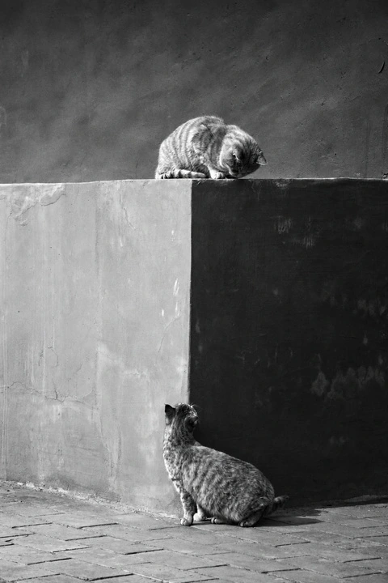
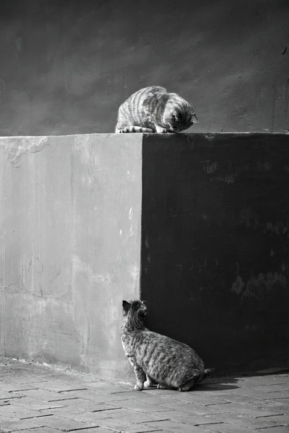
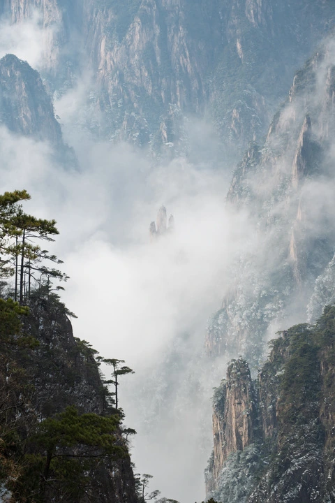
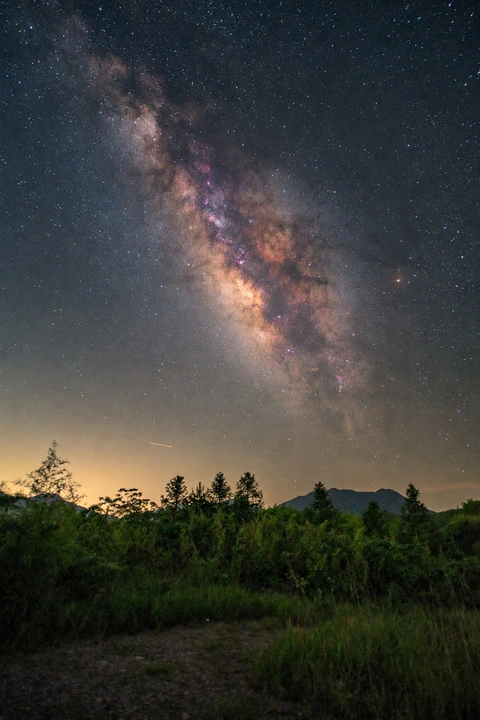
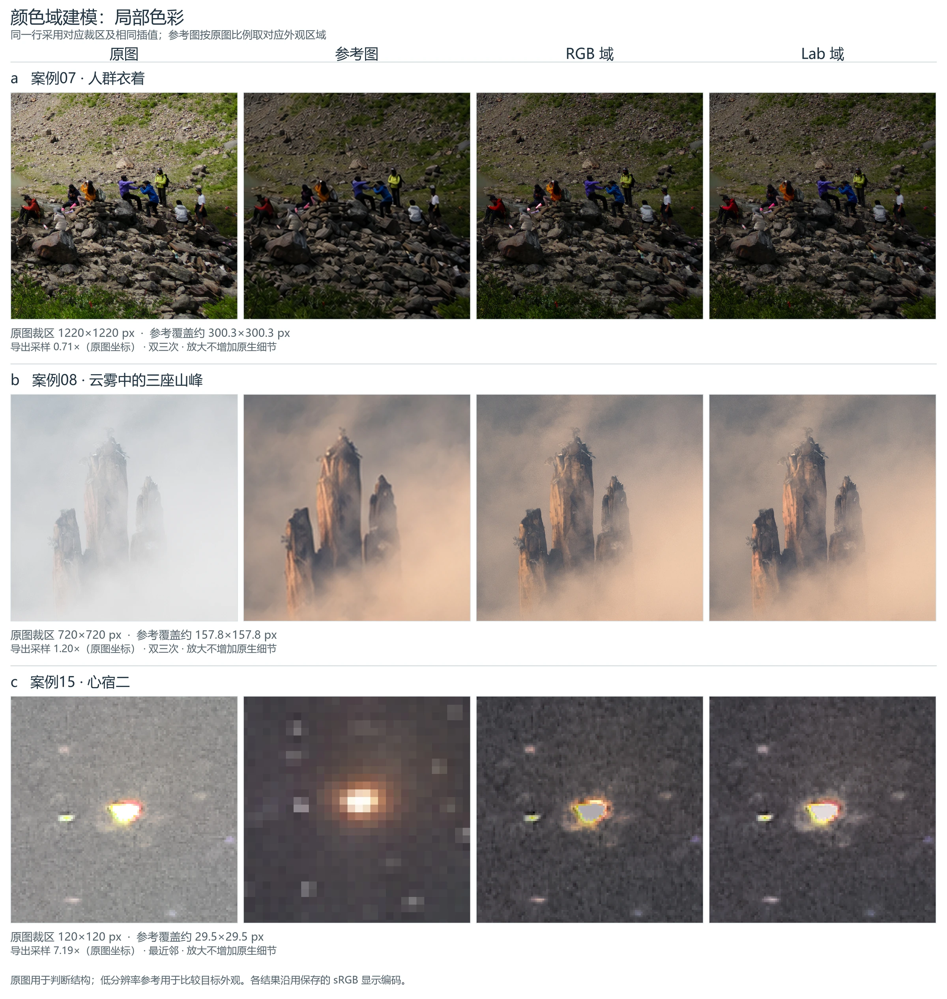
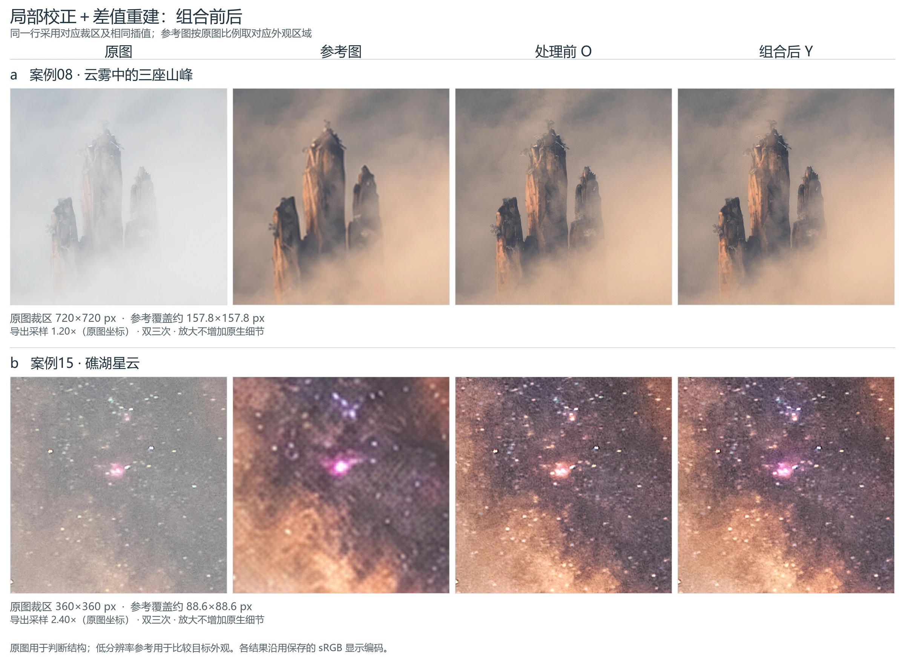

为什么用扩散式编辑来调色
试验用 Image 2.5 根据风格图或文字指令，为原片制作同景调色稿。传统全局颜色映射通常对相近的输入色值施加相近的变换。扩散模型可以结合主体、材质和光照，判断哪些区域要调、各调多少，并协调区域之间的过渡。
让大语言模型调用曲线、色轮和蒙版时，复杂的局部效果需要拆成多个相互配合的调整。扩散式编辑则能在一张稿里同时处理受光岩壁、背光山脊和穿过两者的薄雾，把整套色彩与明暗变化呈现出来，供后续仿色学习。
研究背景
同样是灰色，天空可以偏冷，迎光的岩壁可以偏暖，中间的雾气还要自然过渡。这个例子说明了参考仿色的难点：变换既要看像素颜色，也要看它在场景里是什么、位于哪里。
试验用 Image 2.5 根据风格图或文字指令，为原片制作同景调色稿。传统全局颜色映射通常对相近的输入色值施加相近的变换。扩散模型可以结合主体、材质和光照，判断哪些区域要调、各调多少，并协调区域之间的过渡。
让大语言模型调用曲线、色轮和蒙版时，复杂的局部效果需要拆成多个相互配合的调整。扩散式编辑则能在一张稿里同时处理受光岩壁、背光山脊和穿过两者的薄雾，把整套色彩与明暗变化呈现出来，供后续仿色学习。
生成参考比高像素原片分辨率低，构图虽接近，岩面、云层或细小边缘仍可能被重绘，位置也可能略有偏移。我们从参考和原片的对应位置学习调色变换，再用原片的像素、坐标与邻域按原尺寸渲染。
我们比较了 INRetouch、SM-LUT、BGU、PETAL 等多种方法。在研究最关注的强局部调色场景中，INRetouch 的整体表现最佳，因此选它作为改进起点。它能从一组同景图对中结合颜色、位置和邻域学习变换，也给颜色表示、映射稳定性和局部细节保留留下了进一步优化的空间。
研究方法
外部生图模型沿用原片构图，生成一张色调和明暗接近风格图的同景参考。仿色网络从两张图的对应位置学习变换，再将变换应用到原尺寸照片。


在长边 512 像素的同景图对上拟合。网络分别编码归一化 CIELAB 颜色与全图坐标，再用 3×3 逐通道卷积引入邻域信息。网络预测应加到原片上的 Lab 变化量，主损失分别约束明度和色度分量。原尺寸分块渲染时，各块沿用全图坐标和邻域边界。
颜色表示与损失 待上线训练时在 RGB 接口构造两份输入，分别施加正、负小幅中性扰动。同一网络处理未扰动和扰动后的三份输入，再用差分约束局部曲率与增益，以减少过渡中的突变和明暗次序反转。
响应探针与约束 待上线基于参考尺度上的残余色差，拟合一个随位置平滑变化的双线性 RGB 偏移场。将偏移应用到原尺寸结果后，对校正前后分别做局部拉普拉斯滤波，再把两路滤波结果的差值加回基础仿色。
Y = O + [L(P) − L(O)]
求解与重建公式 待上线历史方法对照
在同一张照片上切换方法。看全图时留意色调和明暗分布，切到局部再看岩壁、建筑立面或猫的毛发。两侧可独立选择，也可以把原片放在一侧作纹理参照。


INRetouch作者原实现本文完整组合这组对照图片未能载入。请重新选择场景或方法。
各方法沿用开发阶段的配置，SA-LUT 使用历史 V-Log 适配。POT 结果与表 5 的 MAE 仅在雾中岩峰场景展示。查看实验条件与表 5 待上线
跨风格仿色
同一套方法能随参考图改变调色目标，既可以迁移整体配色和黑白灰阶，也可以迁移画面各处不同的冷暖与明暗。下面六组对照选自 15 组开发案例，每组都用自己的原图与同景参考拟合。
 原图
原图 同景参考
同景参考
基础仿色降低天空和水面的蓝色饱和度，把整张照片调成柔和的暖灰色。
 原图
原图 同景参考
同景参考
基础仿色提亮红色建筑和绿色草地，同时保持浅色墙面的色调相对中性。
 原图
原图
同景参考
基础仿色把墙面的红蓝色块和猫的毛色转成黑白灰阶，保留亮墙与暗墙的明暗层次。

原图 同景参考
同景参考 完整组合
完整组合把暖色带到受光岩壁和局部雾气，背光处保留偏冷的蓝灰色。
 原图
原图 同景参考
同景参考 完整组合
完整组合压暗天空和峰群，用暖色高光突出穿过云海的光带。
 原图
原图
同景参考 完整组合
完整组合压低天空底色，突出偏橙紫的银河亮带，保留地平线附近的暖光。
水岸、建筑和猫的案例展示基础仿色。岩峰、云海和银河的案例还加入了局部色彩校正与差值重建。
查看论文实验条件与完整对照 待上线实验对照
论文分析了 15 组反复使用的开发案例，其中六例有完整后处理对照。下方的 RGB MAE 降幅衡量与参考图的拟合程度，局部外观结论限定在已观察区域。
六个开发案例 · 浮点输出
3.30–9.75%
以参考尺度 RGB MAE 衡量。单独局部校正下降 5.63–15.45%，差值重建后六例的误差均有所回升。
三个开发案例 · 保存的显示图
9.94–21.77%
在统一的参考图尺度上重新计算 RGB MAE。两条流程的训练尺寸、种子及 JPEG 编码有差异，结果反映整体流程差异。


